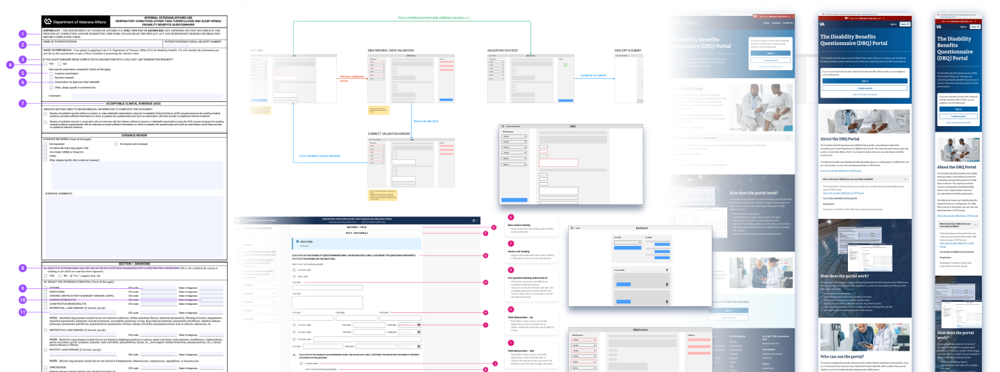

A Veteran healthcare portal
Contents: Problem ▾Process ▾Solution ▾
Overview
The Project
When a Veteran applies for healthcare with the U.S. Department of Veterans Affairs (VA), qualified healthcare providers must assess their healthcare needs, and send this information to the VA using Disability Benefits Questionnaire (DBQ) forms. I was part of a team that developed an online portal that allows for publically available DBQ forms to be filled out and sent in electronically. Using the portal, form formatting is standardized, and there are additional features and quality checks not possible with other methods of filling out the forms.
Role & skills
As the sole designer on this team, I supported developers, project managers, and product owners. The main UX skills involved in this project were:
| SME interviews | Low-fidelity wireframes | User flows | Design system creation |
| High-fidelity mockups | Interactive prototypes | Front-end QA | Graphic design & illustration |
Impact
Developer-ready mockups, interactive prototypes, product demos, marketing materials, and an MVP live site that received consistent positive feedback from SMEs and VA product owners. A total of ten DBQ forms were included in mockups and planned for development before the closure of the project.
The problem
Background
Veterans may use licensed VA healthcare providers, or they may opt for private third party healthcare providers, when completing their required examinations. While licensed VA healthcare providers tend to fill out DBQs more accurately and consistently, private healthcare providers are more widely available and may be more accessible to Veterans. Private providers do not go through the same training process as licensed VA providers, and their approach to filling out the DBQs varies from provider to provider.
Pain points
The lack of standardized methods of filling out the DBQs amongst private providers introduces the main problems associated with this process, and they ultimately contribute to wasted time, effort, and potentially preventing Veterans from receiving their VA health benefits. I spoke with VA product owners, VA healthcare providers, and other VA SMEs via video meetings to learn the common pain points associated with the existing DBQ system. They included:
- The lack of a standardized method for filling out certain DBQ form fields, leading to confusion and inaccurate reading of form contents, and potential rejection of the DBQ form.
- Healthcare provider mistakes, such as failure to fill out required fields, and entering potentially conflicting diagnoses or data points in different form sections.
- The lack of a standardized means of delivering the DBQ PDF form, which could be delivered as hand-written forms, electronic PDFs, or even raw .XML data from other non-standardized electronic sources.
In addition to the main pain points, the discovery process yielded another: DBQ length. Sometimes healthcare examiners only need to fill out a small portion of the DBQ (i.e. a Veteran doesn't have many symptoms), and so scanning the entire DBQ for the appropriate place to enter the information was tedious.
The process
Research & discovery
Through speaking with VA SMEs and my development team, the team determined what forms to prioritize from the list of 60+ publically available DBQs. Each DBQ is a mix of common sections and unique questions, each potentially requiring bespoke design and development. My first step was to determine which common sections could be standardized across each form.
The VA does have its own design system with existing standardized form components and patterns, but because I did not need to strictly adhere to this system for this project, I only took basic inspiration. Things like 508 compliant colors and some existing alert components where appropriate to reuse, along with the overall layout and design of the portal's landing page being kept consistent with existing VA pages.
Key features
From conversations with the team, we determined the key features of the site:
- A landing page & sign in process
- A dashboard for selecting DBQs, and viewing in progress work
- The electronic form itself, and form navigation
- A process for validating the form data
- The sign and send process
With these key features in mind, I began my ideation process.
Mockups & prototypes
The key features of the portal formed the basic structure and flow of the site, so with these in mind, I created my some low fidelity mockups of key screens.
User flow
Next, using the low fidelity mockups, I created a high-level user flow. The team's developers used this as a general framework for building out the portal's main structure and featuers.
View this full size ▸
or scroll through the iframe below.
Mid fidelity prototypes
Next, I created some mid fidelity interactive prototypes demonstrating key interactions. At each step I communicated my ideas to the development team to give them time to scope their work, as well as give me any feedback. Components and prototypes at this stage were designed to capture core features and functionality, rather than represent anything final.
The mid fidelity portal prototype in action:
Pain point #1:
Free text field confusion
DBQs often have optional free text fields that include the phrase "list using the above format". This introduces an unnecessary burden on examining clinicians, who simply have to figure out for themselves how to format their additional responses. If they don't reproduce this format accurately, it introduces potential confusion for the VA raters, and delays in processing the Veteran's benefits.
Pain point #2:
Missing information
The long form paper DBQs can be complex and require detailed information, and if any required question is missed, it introduces delays in processing benefits. By default, every question on an electronic DBQ is required, unless otherwise noted. The DBQ cannot be sent it to the VA via the portal unless each question has a response, eliminating the potential for missed questions.
Pain point #3:
Standard formats
In the vast majority of cases, the VA expects to receive DBQ forms as PDFs, either hand written or electronic. By default, the portal generates an electronic PDF by mapping a user's responses to their respective PDF form elements, and sends this electronic form to the VA. The user can then download the form as an electronic PDF, or .XML file, for local storage.
Pain point #4:
Cognitive load
DBQs can be very visually cluttered, and physician's may not even need to fill out whole section of a given form, depending on the specific health issues a Veteran faces. On the paper form all questions are visible at once, but in the electronic form, we can hide conditionally visible form elements behind their corresponding parent option.
Testing and iteration
I conducted basic usability testing with my internal team members, external VA product owners, and other VA SMEs. In the early stages of the project, development kept pace with design, so I was able to use a combination of Figma prototypes and the live MVP site itself.
An example prototype I used for usability testing, which include tablet-responsive design, left navigation menu, and conditionally visible form elements.
Additional and more involved testing with a wider range of potential users was planned, but due to the closure of the project, usability testing was limited to those invovled with the designa and development process for the first version of the MVP live site.